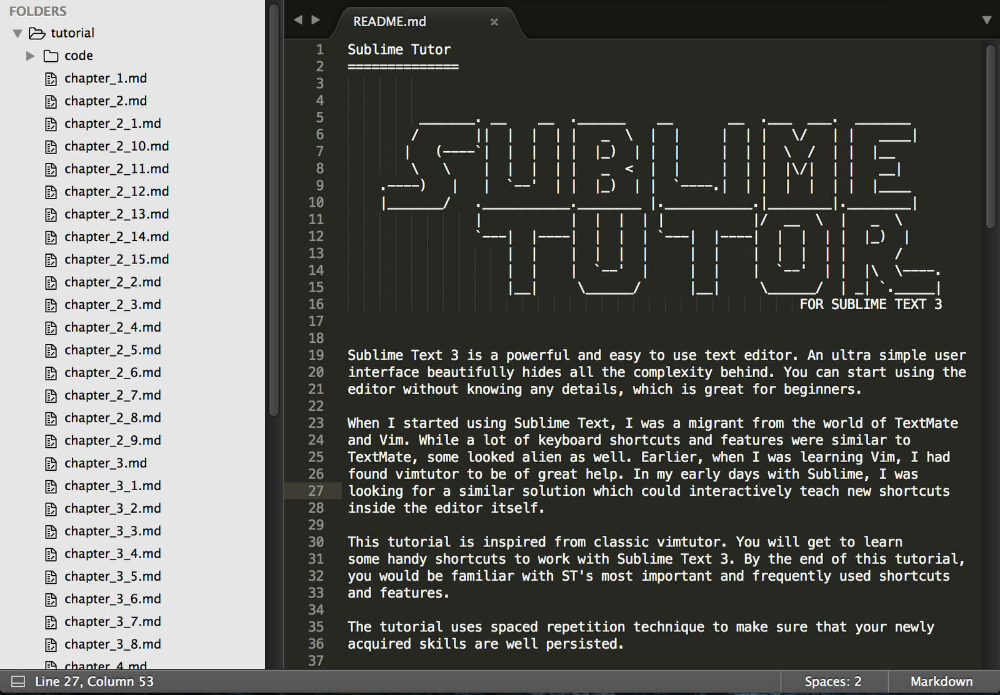

Sublime 3.0 brings a refreshed UI theme, new color schemes, and a new icon. Some of the other highlights are big syntax highlighting improvements, touch input support on Windows, Touch Bar support on macOS, and apt/yum/pacman repositories for Linux.
I wanted to highlight some of the changes from Sublime Text 2 here, however it's surprisingly hard: virtually every aspect of the editor has been improved in some way, and even a list of the major changes would be too long. If you'd like to see the full list of changes, the team has made a dedicated page for them. Certainly there are big features that 3.0 has: Goto Definition, a new syntax highlighting engine, a new UI, and an expanded API. However the difference is frequently felt in the hundreds of improvements that don't warrant being featured on their own: spell checking works better, automatic indentation does the right thing more often, word wrapping handles source code better, high DPI screens are properly supported, and Goto Anything is smarter. There's too much to list, but combined the difference is night and day. One of the areas I'm especially proud of in Sublime Text 3 is performance: it's significantly faster than Sublime Text 2 along every axis. Startup is faster, opening files is faster, and scrolling is more efficient. While it's a much larger application than 2, it feels leaner. If you purchased your Sublime Text license from February 2013 onwards, then it's already valid for Sublime Text 3.0. If your license key is for Sublime Text 1 or 2, then you can purchase an upgrade. From myself and the team at Sublime HQ, we're very proud of Sublime Text 3.0, and we hope you enjoy it as much as we do. Onwards to 3.1! Downloads and a full changelog are available on the Sublime Text 3 page.